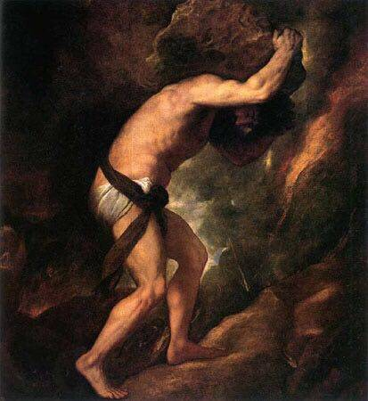

分享会 | “命名”展背后的故事与反思

如果
一只鸟在空无一人的树林中唱歌
那这首歌存在过吗？
广州虽人口众多
但2016年9月的羊城
却仿佛是静谧的森林——命名展因为种种原因被取消
而创作者们只能在空无一人的课室里
向所有不在场的观众呈现其中的作品
“命名”展经历过夭折、质疑
也收获过关注、赞赏
无论是展览还是其中的人
都在默默的成长
而如今我们又有机会
历经辛苦
这一个展览终于能够在杭州与大家见面
在这半年里
背后产生了怎样的故事与反思呢？
作为作品的“拼贴师”
策展人又是如何去理解、组合各个作品的呢？

此次分享会，策展人西西将会糅合她个人的生命经历以及同志议题的一些小小观察，来给我们讲述发生在“命名”展身上的一些故事及其变化的一些脉络。
希望这次分享能够让大家对展览有更深的理解，对作品能有更多的共鸣。
最重要的是，我们希望在现场能听到你对这一个展览的感想与体会，我们珍视这份互动，相信它能带给我们新的视角，从而撬动未来展览的设计。

西西：广州与杭州“命名”展的策展人。从2016年6月开始参与教科书去污名的行动，曾游说暨南大学出版社以及编者修订教材中有关同性恋的错误内容。最近在探索艺术介入社会运动。


↑↑↑论坛的支付宝↑↑↑
欢迎打赏个场地费：-D
（记得备注哦）

小编的碎碎念
从教科书去污名化到广州未能呈现的展览，西西在和我分享她的经历时我不由地想到了她的名字。西西弗斯在神话中为人间消除了死亡却因此触怒了众神；作为惩罚他只能永无止境地将巨石推至山顶，然后任其滚下山去再重复之前的劳动，生命便在这周而复始中消逝。

或许我们的抗争就像在忤逆众神，只会招致惩罚；或许这项工作只是看似枯燥的周而复始，不能改变什么，但若是一人的坚持能被更多人知晓，并将这意志流传下去，那这些努力就绝非毫无意义。